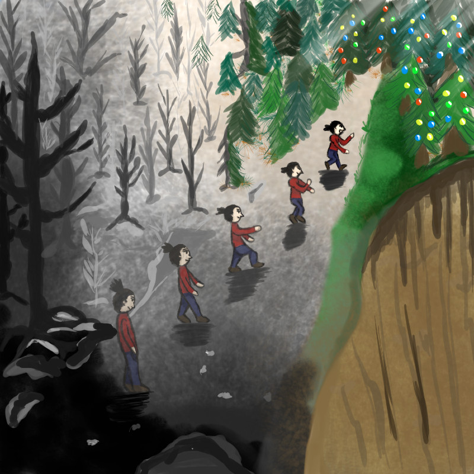

Creacover 2019 : J5
Publié le 18/01/2019 dans Dessin.
La musique du jour est Merry Christmas Mr.Lawrence de Ryuichi Sakamoto.
Ahhhh, que j’aime cette mélodie. Il y a une progression forcée dans l’écoute de ce morceau. Tout est plat, calme et triste, avec seulement le piano. Puis vient s’ajouter la contrebasse (ou le violoncelle ?!? :thinking: ) qui accentue la peine comme pour la faire sortir. Il se passe alors comme une prise de conscience, une avancée qui nous fait sortir de la torpeur pour courir vers la lumière et la vie (c’est l’arrivée frappante du violon).
Voilà, voilà. Mon pépère passe de la dépression dans un milieu calciné à la joie de pouvoir gambader dans la verdure éclatante. Et puis c’est Noël, alors tout va mieux.
